魔方公式
公式来自颜瑞民微信公众号
"魔方根"
请关注支持
网站：
https://www.cuberoot.me/zh/
三阶
初级
转动符号
转动的标记
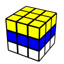
LBL
层先法--一层一层还原
中级
cross
做好底部十字
F2L
做好中层和底层
OLL
做好顶层的块的朝向
PLL
做好顶层的块的顺序
高级
ZBLL
顶层十字，完成朝向和顺序
WV
同时完成最后槽和顶层朝向
COLL
OLL的子集-顶层十字
CMLL
桥式CMLL公式
二阶
色先法
先色向，后顺序。
面先法
先朝向，后顺序。
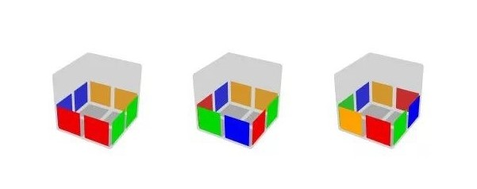
EG
顶层一步到位
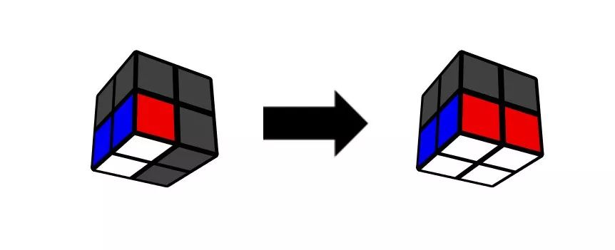
底层
做好底部
EG全预判
练好二阶的必要途径
LEG,TCLL
练好二阶的必要途径
高阶
四阶
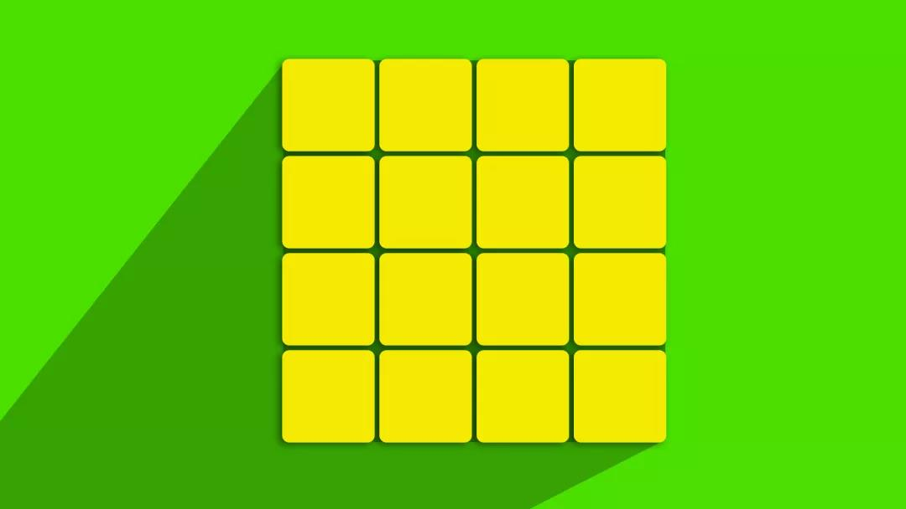
Yau Method
四阶常用方法
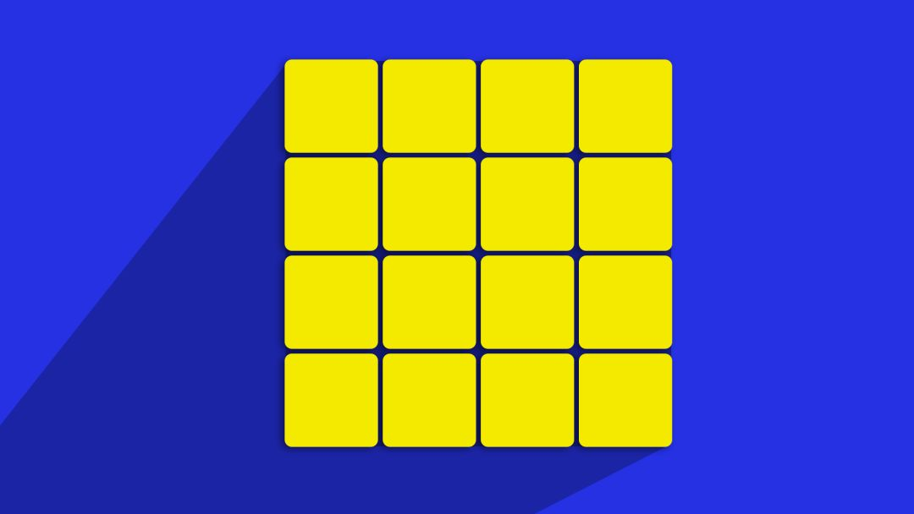
PPLL
四阶不常用方法
五阶
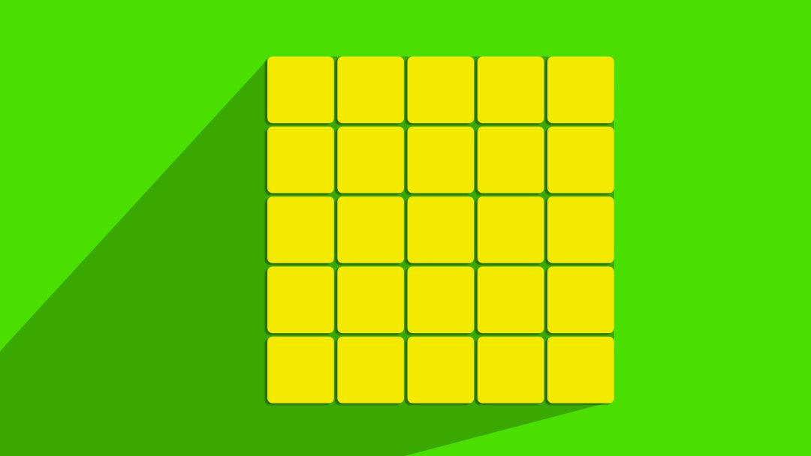
前四中心
前四中心公式
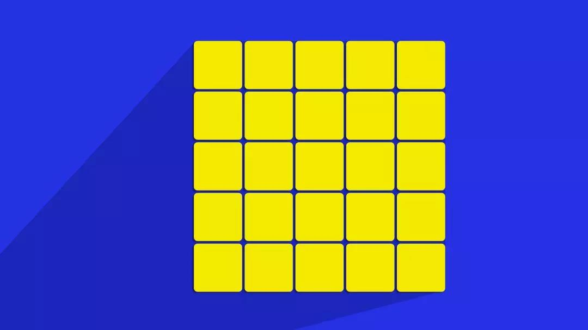
F8E
最后棱公式
异形
五魔方
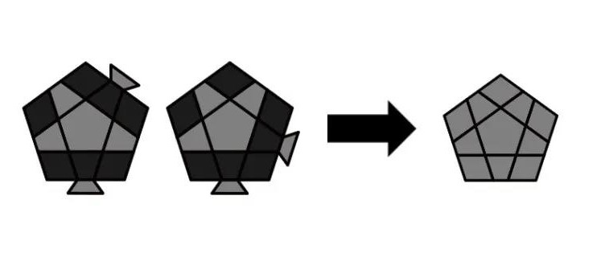
OLL
四阶常用方法
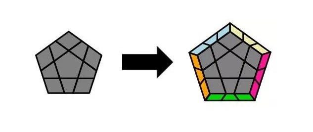
PLL
同时完成最后槽和顶层朝向
斜转
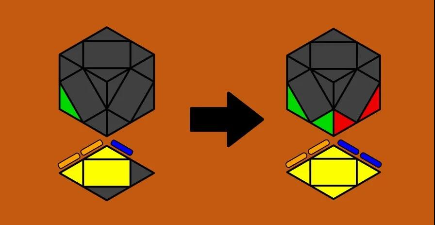
Skewb
斜转的一些公式
SQ-1
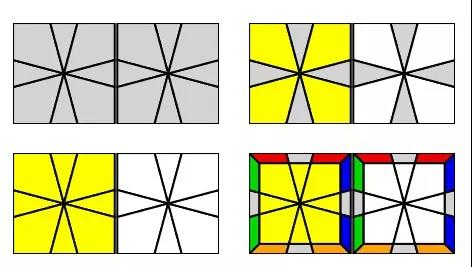
SQ-1
SQ-1的一些公式